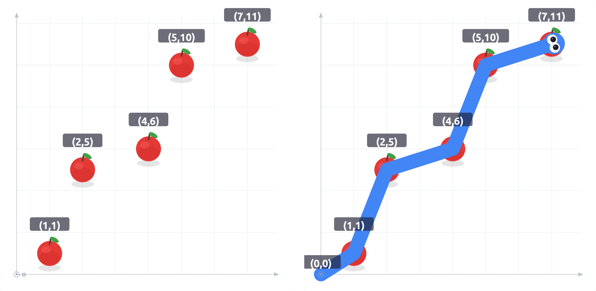

2차원 평면 위에 $$$N$$$개의 사과가 놓여 있다. 한 마리의 뱀이 원점 $$$(0,\,0)$$$에서 출발하여, 이 중 일부를 골라 순서대로 먹으며 이동한다.
뱀의 출발점을 $$$P_0 = (0,\,0)$$$으로 놓고, 먹는 사과의 위치를 순서대로 $$$P_1, P_2, \ldots, P_L$$$이라 하자.
뱀은 오른쪽 위로만 전진한다.즉, 모든 $$$0 \leq i \lt L$$$에 대해 $$$x_i \lt x_{i+1}$$$이고 $$$y_i \lt y_{i+1}$$$이다. 각 점의 좌표를 $$$P_i = (x_i,\, y_i)$$$로 쓴다.
뱀은 지그재그로 나아간다. 연속한 두 사이의 이동 기울기를 $$$s_i = \dfrac{y_{i+1} - y_i}{x_{i+1} - x_i}$$$ ($$$0 \leq i \lt L$$$)라 정의하자. $$$L \geq 2$$$일 때, 기울기 수열 $$$s_0, s_1, \ldots, s_{L-1}$$$은 다음 두 형태 중 하나를 만족해야 한다.
$$$$$$s_0 \gt s_1 \lt s_2 \gt s_3 \lt \cdots \quad \text{또는} \quad s_0 \lt s_1 \gt s_2 \lt s_3 \gt \cdots$$$$$$

예제 4의 사과 배치(왼쪽)와 최적 경로 $$$L = 5$$$(오른쪽)를 나타낸 것이다.뱀이 먹을 수 있는 사과의 최대 개수 $$$L$$$을 구하여라.
첫째 줄에 사과의 개수를 나타내는 정수 $$$N$$$이 주어진다.
다음 $$$N$$$개의 줄에 각각 사과의 $$$x$$$좌표와 $$$y$$$좌표를 의미하는 두 정수 $$$x$$$, $$$y$$$가 공백으로 구분되어 주어진다.
뱀이 먹을 수 있는 사과의 최대 개수를 출력한다.
31 32 23 1
1
21 23 3
2
51 13 26 410 815 15
3
51 12 54 65 107 11
5